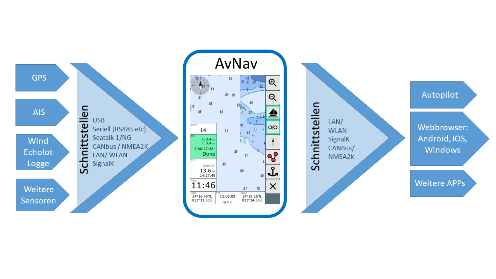

Ein Hinweis vorweg:
Ich kann keine Garantie für die Funktion der App übernehmen, insbesondere die Nutzung zu Navigationszwecken geschieht auf eigenes Risiko. In jedem Falle empfehle ich einen intensiven Test der Genauigkeit der Darstellung und des verwendeten Kartenmaterials.
Eine ausführliche Beschreibung der Konzepte findet man im Kapitel Einführung.
AvNav ist primär ausgelegt für die Bedienung auf Touch-Geräten (auch mit relativ kleinen Bildschirmen). Es wurde versucht, die Bedienelemente und Anzeigen so zu gestalten, dass sie auch unter Bord-Bedingungen gut nutzbar sind.
Eine Bedienung über Maus (und Tastatur) ist natürlich ebenfalls möglich.
AvNav gibt es in 2 Varianten:
AvNav steht als Paket für verschiedene
Linux-Distributionen (Debian Pakete, Rpm) sowie als Installer
für Windows zur Verfügung.
Die Debian-Pakete sind in einem Repository
verfügbar und können außerdem von der Release-Seite
heruntergeladen werden.
Außerdem pflegen wir Images für den
Raspberry Pi. Eine ausführliche Beschreibung findet sich im Kapitel
Installation.
Nach der Installation und Start der App kann man sich mit dem Browser zu
AvNav verbinden. Dadurch startet die WebApp.
Wenn man unsere Images nutzt, erzeugt der Raspberry ein WLAN (Name und
Passwort können angepasst werden). Für Details, wie man sich nach der
Installation mit dem Server verbindet, siehe die Image
Beschreibung.
Wenn man über einen anderen Weg mit dem AvNav-Server verbunden ist, kann
man http://avnav.local benutzen (oder die IP Adresse des Servers).
Für IOS- und Android-Geräte ist es empfehlenswert, einen Bonjour
Browser zu nutzen. Dieser kann AvNav im lokalen Netz finden, so dass man
ohne Adresseingabe sofort den Browser starten kann.
Die App steht im Play Store zur
Verfügung 
Nach der Installation oder der Nutzung eines Images wird AvNav in der Regel ohne weitere Konfiguration starten. An den USB-Anschlüsse werden serielle Schnittstellen mit ihren Baudraten automatisch ermittelt. Je nach gewählter Installation ist meist ein Empfänger für UDP-Daten auf Port 34667 aktiv.
Für weitergehende Anforderungen kann eine detaillierte Konfiguration des Servers über die Server/Status Seite vorgenommen werden. Eine Anpassung des Aussehens kann über die Einstellungen, über Anpassungen des Layouts und über nutzerdefinierten Code/CSS sowie Plugins vorgenommen werden.

AvNav verarbeitet NMEA0183-Daten, die über angeschlossene USB-Geräte, serielle Schnittstellen, Bluetooth-Geräte, TCP (Client und Server) oder UDP empfangen werden können. Eine Multiplexer-Funktion erlaubt es, die Daten von allen angeschlossenen Schnittstellen zu empfangen und konfigurierbar an beliebige Schnittstellen wieder auszusenden.
Einen Teil der Daten dekodiert AvNav (Positionsdaten, AIS,...) und nutzt
sie für die eigenen Anzeige-Funktionen.
Die folgenden NMEA-Datensätze werden von AvNav
dekodiert:
Je nach Konfiguration kann AvNav auch NMEA-Daten erzeugen:
In Zusammenarbeit mit Canboat and
SignalK können auch NMEA2000-
Daten empfangen und genutzt werden. Außerdem können alle Daten für das
eigene Schiff, die in SignalK verfügbar sind, in AvNav angezeigt werden.
Ab Version 20220421 kann AvNav auch direkt seine Navigationsdaten von
SignalK erhalten.
Unter Android kann das interne GPS genutzt werden. Außerdem kann eine TCP- oder Bluetooth-Verbindung zum Empfang von GPS- oder AIS-Daten genutzt werden. Auf Geräten mit USB-Host-Funktion kann auch ein Seriell-USB-Adapter angeschlossen werden.
Es werden die folgenden NMEA-Daten dekodiert:
Bei enstprechender Konfiguration kann AvNav $GPRMC und $GPRMB-Sätze (ab 20220225 auch $GPAPB) erzeugen und aussenden.
AvNav verarbeitet grundsätzlich Karten im Rasterformat. Diese können aus verschiedenen Quellen im Netz heruntergeladen werden (z.B. OpenSeaMap or NOAA) oder z.B. mit dem MobileAtlasCreator oder SASPlanet aus Quellen im Netz erstellt werden.
Unmittelbar verarbeiten kann AvNav Karten im "gemf"- und "mbtiles"-Format. Daneben können Karten z.B. im BSB-Format (kap) in das gemf Format konvertiert werden, entweder direkt auf dem Raspberry - oder besser vorher auf einem Desktop-System.
Außerdem kann AvNav o-charts- Karten verarbeiten, unter Android mit der avocharts app (ochartsng). Der O-Charts-Shop bietet Karten für Open-Source-Software zu sehr günstigen Preisen an.
Mit dem ochartsng plugin kann AvNav auch freie S57 Karten anzeigen (nach Konvertierung).
Karten müssen in AvNav installiert werden, bevor sie genutzt werden
können. Das kann auf der Files/Download
Seite, erfolgen - Sektion charts  . O-charts Karten müssen über das o-charts
plugin / ochartsng plugin
hochgeladen werden.
. O-charts Karten müssen über das o-charts
plugin / ochartsng plugin
hochgeladen werden.
Mit dem mapproxy-plugin kann AvNav darüber hinaus verschiedene Online-Karten einbinden. Für die Offline-Nutzung einzelner Bereiche von Online-Karten kann das Plugin ebenfalls genutzt werden.
Weitere Details herzu finden sich im Kapitel Karten.
Auf der Seite "Navigation" werden dargestellt: Die aktuelle Boots-Position, der Kurs, die Route zum nächsten Wegepunkt, die aktuelle Route, AIS Ziele und deren Kurse, Navigationskreise und definierte Overlays.
Weitere Navigationsdaten können dargestellt werden auf der Seite "Navigation", im Routen-Editor und auf bis zu 5 Dashboard-Seiten, die selbst konfiguriert werden können. Das schließt auch die in SignalKvorhandenen Werte ein.
Es können einfache Zahlenwerte, analoge Anzeigen oder auch Grafik-Anzeigen realisiert werden.
Die Darstellung der Navigationsdaten kann in weiten Grenzen an eigene Bedürfnisse angepasst werden. Dazu dient der Layout-Editor Eigene Anzeige-Layouts können mit ein wenig JavaScript-Code und mit CSS erstellt werden.
Diese Layouts beinhalten auch eine Anpassung an unterschiedliche Bildschirm-Ausrichtungen und -auflösungen.
In AvNav können sehr einfach Routen erstellt und bearbeitet werden. Das erfolgt in der Kartenansicht im Routen-Editor. Im Normalfall verschiebt man die Karte so, dass der Mittelpunkt auf dem gewünschten Wegepunkt liegt, und fügt diesen dann mit einem Klick der Route hinzu. Punkte der Route können verschoben, gelöscht und bearbeitet werden.
Wegepunkte oder andere Routen, die als Overlays angezeigt werden, können im Routen-Editor der aktuellen Route hinzugefügt werden.
Eine Route kann invertiert werden, alle Wegepunkte können auch gelöscht werden. Routen werden in AvNav als "gpx"-Dateien gespeichert. Sie können über die Files/Download-Seite importiert und exportiert werden. Aus dem Routen-Editor kann die Navigation direkt gestartet werden. Innerhalb einer Route erfolgt eine Alarmierung, wenn der nächste Wegepunkt erreicht wird bzw. sobald man sich innerhalb des "approach" genannten Umkreises befindet. Es erfolgt ein automatisches Weiterschalten zum nächsten Wegpunkt.
Ab Version 20220819 kann AvNav zwei verschiedene Routing Modi nutzen:
Die Umschaltung erfolgt im Router auf der  Server/Status
Seite. Für das
Server/Status
Seite. Für das  Mess-Tool kann in den Einstellungen der Web
App (unter Navigation/Measure Display RhumbLine) der Modus separat
eingestellt werden. Damit können leicht die beiden Wege verglichen werden.
Mess-Tool kann in den Einstellungen der Web
App (unter Navigation/Measure Display RhumbLine) der Modus separat
eingestellt werden. Damit können leicht die beiden Wege verglichen werden.
Für die automatische Weiterschaltung zum nächsten Wegepunkt in einer Route müssen immer zwei Bedingungen erfüllt sein:
AvNav zeichnet beständig den aktuellen Track auf und zeigt ihn auf der Karte. Dabei wird versucht, die Zahl der Trackpunkte zu begrenzen, indem nur bei größeren Änderungen oder nach einer bestimmten Zeit erneut ein Trackpunkt geschrieben wird (Siehe Konfiguration ANVTrackWriter ). Die Tracks werden in regelmäßigen Abständen als "gpx"-Datei gespeichert und können auf der Files/Download-Seite exportiert und importiert werden (dort ist auch eine Anzeige ihrer Daten - also Strecke, Zeit, usw. möglich). Pro Tag wird eine separate "gpx"-Datei erzeugt. Außerdem können vorhandene Tracks auf der Karte als Overlay dargestellt werden.
Vorhandene Tracks können in Routen umgewandelt werden. Dabei wird über einen Reduktionsalgorithmus die Zahl der Wegepunkte automatisch reduziert.
In der Kartendarstellung werden AIS-Ziele in einem bestimmten Umkreis (default: 20nm) mit ihren Positionen und ihren Kursen dargestellt. Außerdem erfolgt eine Berechnung des nächsten Zieles und eine Warnung, falls eine einstellbare minimale Begegnungsentfernung unterschritten wird (CPA).
Für Details siehe die Beschreibung auf der Navigationsseite.
AvNav kann Alarme erzeugen für:
Alarme werden in AvNav auf dem Server erzeugt und verwaltet. Insbesondere z.B. für die Ankerwache können alle Anzeige-Geräte abgeschaltet werden, aber die Überwachung läuft weiter.
Es kann bei den Alarmen eine akustische Signalisierung sowohl auf dem Server, als auch in der Client-Anzeige erfolgen. Auf dem Server können auch weitere Aktionen ausgelöst werden (siehe Beispiel). Die Konfiguration erfolgt im configfile - AVNAlarmHandler.
AvNav kann auf der Hauptseite in
einen Nachtmodus  geschaltet werden. Dann sind alle Anzeigen entsprechend angepasst.
geschaltet werden. Dann sind alle Anzeigen entsprechend angepasst.
AvNav kann die Anzeige Funktionen auf einem Gerät von einem anderen Gerät oder vom Server aus steuern. Für Details siehe die Beschreibung dazu.
AvNav kann in unterschiedlicher Weise an eigene Bedürfnisse angepasst werden. Da die gesamte Darstellung im Browser abläuft, kann man das Aussehen mit CSS anpassen.
Die Konfiguration des Servers arfolgt über die Datei avnav_server.xml. Eine Änderung sollte im Normalfall jedoch nicht in der Datei direkt erfolgen, sondern über die Bearbeitungsmöglichkeiten auf der Server/Status-Seite.
Neben der bereits beschriebenen Anpassung der Layouts im Layout-Editor können ohne größeren Aufwand eigene Anzeigen mit ein wenig Java Script Code eingebunden werden.
Es ist auch möglich, weitere externe oder AvNav-interne Webseiten als "User Apps" einzubinden und anzuzeigen.
Die zur Darstellung genutzten Symbole können über eine Json-Datei angepasst werden, ebenso die Tastaturkürzel für Aktionen.
Mit Python, JavaScript und CSS können eigene Plugins geschrieben werden, die die Funktionalität von AvNav erweitern.